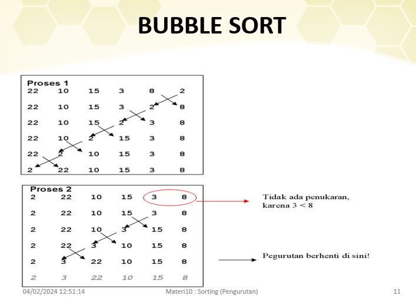
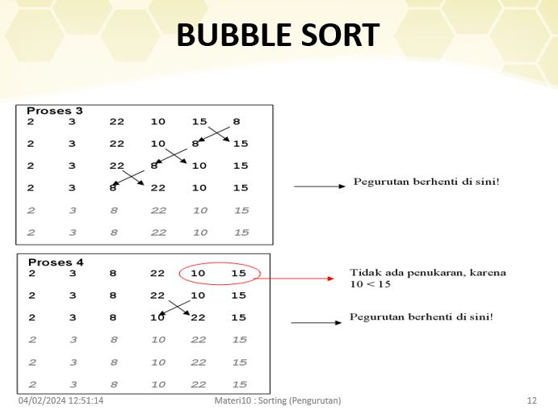
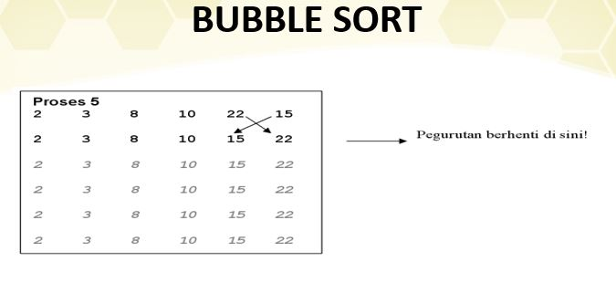

Welcome To My Blog
Sebuah Blog yang ditulis oleh saya sendiri

Sorting
Pengurutan (Sorting)
Pengurutan adalah proses mengatur ulang elemen-elemen dalam suatu himpunan data dalam urutan tertentu.
Tujuan utama dari pengurutan adalah untuk mempermudah pencarian, pemrosesan, dan analisis data. Ada banyak algoritma pengurutan yang berbeda, masing-masing dengan kecepatan dan kompleksitas yang berbeda pula.
Jenis-jenis Algoritma Pengurutan
1. Bubble Sort: Algoritma ini bekerja dengan membandingkan pasangan elemen berdekatan dan menukar mereka jika urutan mereka salah. Proses ini berulang hingga seluruh himpunan data terurut dengan benar. Meskipun sederhana, bubble sort memiliki kompleksitas waktu yang tinggi dan tidak efisien untuk himpunan data besar.
2. Selection Sort: Algoritma ini bekerja dengan memilih elemen terkecil dari himpunan data dan menukar posisinya dengan elemen pertama. Kemudian, elemen terkecil dari himpunan data yang belum terurut dipilih dan ditukar dengan elemen kedua, dan seterusnya. Selection sort juga memiliki kompleksitas waktu yang tinggi dan tidak efisien untuk himpunan data besar.
3. Insertion Sort: Algoritma ini bekerja dengan memilih satu elemen pada satu waktu dan memasukkannya ke posisi yang tepat dalam himpunan data yang sudah terurut. Proses ini berulang hingga seluruh himpunan data terurut. Insertion sort memiliki kompleksitas waktu yang lebih baik daripada bubble sort dan selection sort, tetapi masih tidak efisien untuk himpunan data besar.
4. Merge Sort: Algoritma ini menggunakan pendekatan "divide and conquer" dengan membagi himpunan data menjadi dua bagian, mengurutkan masing-masing bagian secara terpisah, dan kemudian menggabungkan kembali bagian-bagian yang terurut. Merge sort memiliki kompleksitas waktu O(n log n) dan efisien untuk himpunan data besar.
5. Quick Sort: Algoritma ini juga menggunakan pendekatan "divide and conquer" dengan memilih suatu elemen sebagai "pivot", mempartisi himpunan data menjadi dua bagian berdasarkan pivot, dan kemudian mengurutkan masing-masing bagian secara terpisah. Quick sort memiliki kompleksitas waktu yang sangat baik dalam kasus rata-rata (O(n log n)), tetapi dapat memiliki kompleksitas waktu terburuk O(n^2) dalam beberapa kasus terburuk.
6. Heap Sort: Algoritma ini menggunakan struktur data heap untuk mengurutkan himpunan data. Himpunan data diubah menjadi heap, dan elemen teratas heap (elemen terbesar) dihapus dan ditempatkan di akhir himpunan data. Proses ini berulang hingga seluruh himpunan data terurut. Heap sort memiliki kompleksitas waktu O(n log n) dan efisien untuk himpunan data besar.
7. Counting Sort: Algoritma ini digunakan untuk mengurutkan himpunan data dengan rentang nilai yang terbatas. Counting sort menghitung jumlah kemunculan setiap elemen dan menggunakan informasi ini untuk menempatkan setiap elemen pada posisi yang tepat dalam himpunan data terurut. Counting sort memiliki kompleksitas waktu O(n + k), di mana n adalah jumlah elemen dalam himpunan data dan k adalah rentang nilai elemen.
8. Radix Sort: Algoritma ini digunakan untuk mengurutkan himpunan data dengan digit atau karakter yang terbatas. Radix sort mengurutkan himpunan data berdasarkan digit atau karakter dari digit terkecil hingga digit terbesar. Radix sort memiliki kompleksitas waktu yang tergantung pada jumlah digit atau karakter dalam himpunan data.
Kriteria Pengurutan
Selain jenis algoritma pengurutan, ada juga beberapa kriteria yang dapat digunakan dalam pengurutan data, antara lain:
1. Ascending Order (Urutan Menaik): Data diurutkan dari nilai terkecil ke nilai terbesar.
2. Descending Order (Urutan Menurun): Data diurutkan dari nilai terbesar ke nilai terkecil.
3. Stable Sorting: Algoritma pengurutan yang menjaga urutan relatif elemen-elemen dengan nilai yang sama. Artinya, jika terdapat dua elemen dengan nilai yang sama, elemen yang muncul lebih awal dalam himpunan data akan tetap berada di posisi sebelum elemen yang muncul kemudian.
4. In-Place Sorting: Algoritma pengurutan yang melakukan pengurutan langsung pada himpunan data yang ada tanpa memerlukan himpunan data tambahan. Algoritma in-place sorting membutuhkan sedikit atau tanpa alokasi memori tambahan.
Kompleksitas Waktu Pengurutan
Kompleksitas waktu adalah ukuran efisiensi algoritma pengurutan dan menggambarkan seberapa cepat algoritma dapat mengurutkan himpunan data. Berikut adalah kompleksitas waktu rata-rata dan terburuk untuk beberapa algoritma pengurutan:
1. Bubble Sort: Rata-rata O(n^2), Terburuk O(n^2)
2. Selection Sort: Rata-rata O(n^2), Terburuk O(n^2)
3. Insertion Sort: Rata-rata O(n^2), Terburuk O(n^2)
4. Merge Sort: Rata-rata O(n log n), Terburuk O(n log n)
5. Quick Sort: Rata-rata O(n log n), Terburuk O(n^2)
6. Heap Sort: Rata-rata O(n log n), Terburuk O(n log n)
7. Counting Sort: O(n + k)
8. Radix Sort: O(d * (n + k)), di mana d adalah jumlah digit atau karakter dalam himpunan data, n adalah jumlah elemen dalam himpunan data, dan k adalah jumlah kemungkinan nilai digit atau karakter.
Aplikasi Pengurutan
Algoritma pengurutan digunakan dalam berbagai aplikasi, di antaranya:
1. Pencarian: Pengurutan dapat mempermudah pencarian data yang diurutkan, seperti pencarian biner.
2. Analisis Data: Pengurutan memungkinkan analisis data yang lebih mudah dan efisien, seperti mencari nilai maksimum atau minimum, atau menghitung median.
3. Basis Data: Pengurutan
Contoh-Contoh



Insertion Sort


Selection Sort

Penulis Muhamad Dzikrulloh

Struktur data adalah pengaturan data di dalam memori komputer. dengan cara menyimpan, mengambil, dan menyusun data. Struktur data memungkinkan data yang ada di komputer lebih mudah diakses dan diperbarui.
Read More..
Adalah tipe data yang hanya bernilai benar (true) atau salah (false). Jangkauan (nilai yang mungkin) hanya 2 yaitu true atau false. ADT (Abstract Data Type) atau Tipe Data Bentukan
Read More..
• Array dapat didefinisikan sebagai suatu himpunan hingga elemen yang terurut dan homogen. Terurut : Dapat diartikan bahwa elemen tersebut dapat diidentifikasi sebagai elemen pertama, elemen kedua dan seterusnya sampai elemen ke-n.
Read More..
• Penyimpanan dan pengambilan data yang sangat efektif apabila data yang terakhir masuk adalah data yang akan diambil pertama kali. • Tumpukan memungkinkan akses ke satu item data saja, yaitu item terakhir yang disisipkan.
Read More..
1. Queue (antrian) adalah struktur data dimana proses pengambilan dan penambahan element dilakukan pada ujung yang berbeda. 2. Queue mengikuti konsep FIFO.
Read More..